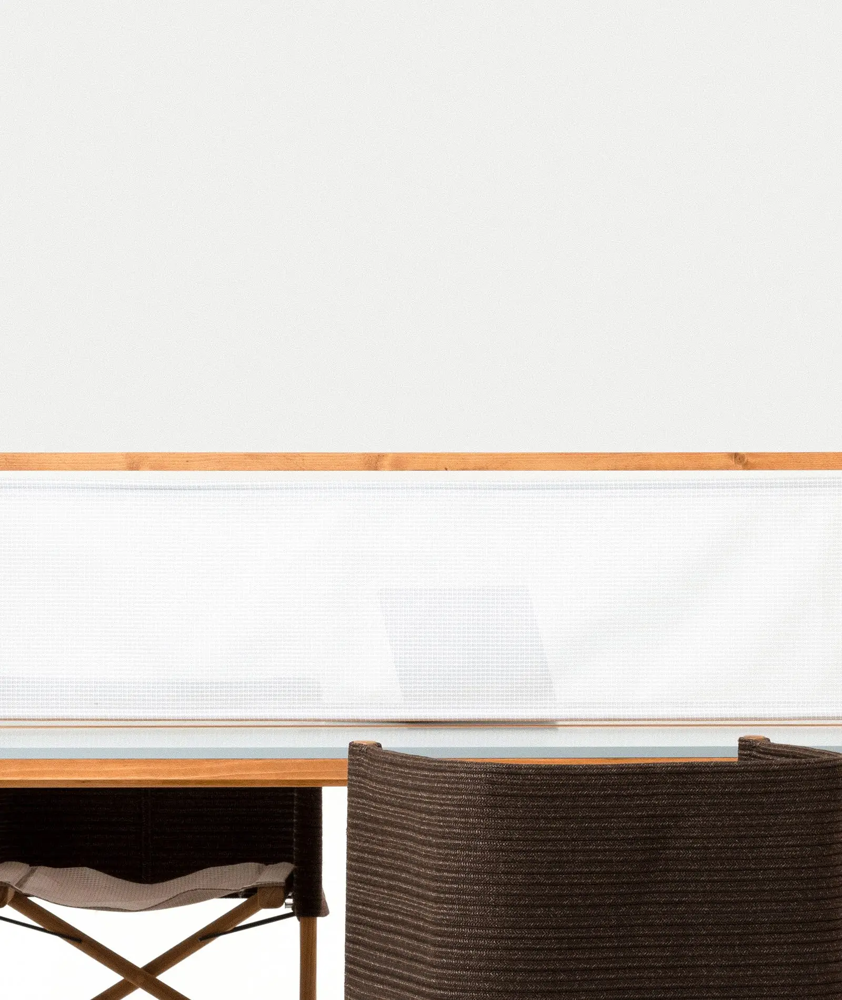
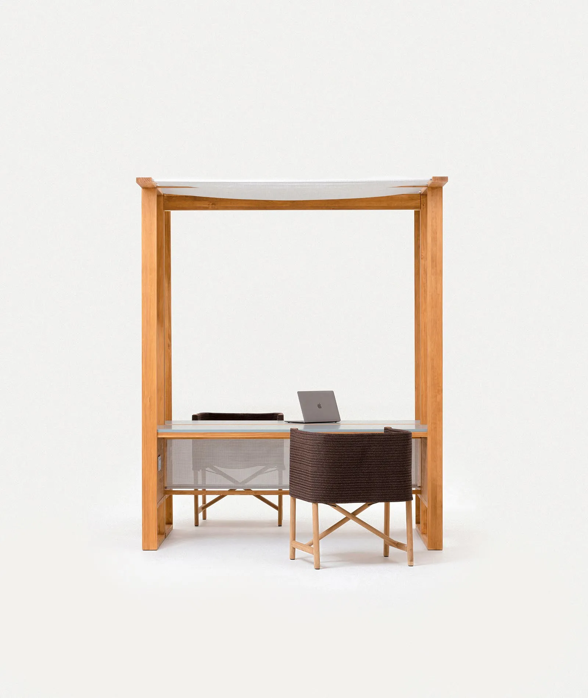
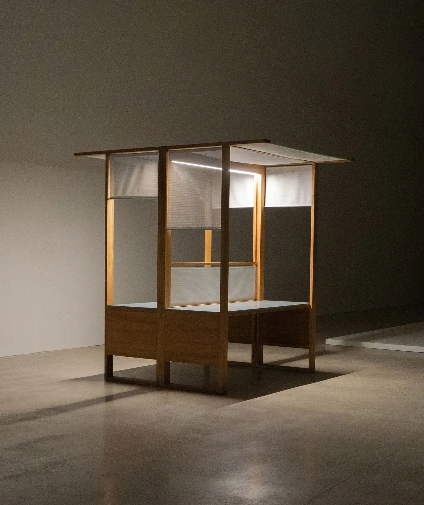

OUTDOOR WORKPLACE
6
Outdoor Workplace, en colaboración con Kettal, fue el resultado de mi trabajo de investigación de fin de grado en Elisava.
Outdoor Workplace, Oficinas al Aire Libre, apuesta por adaptar de manera cómoda y versátil los espacios exteriores a entornos destinados al trabajo.
La propuesta hacia Kettal surgió por querer incorporar a su actual catálogo una nueva colección diseñada específicamente para satisfacer las necesidades que puedan surgir al trabajar en espacios al aire libre. Quise focalizar el inicio de esta investigación en un contexto actual, que refleja cambios consecuentes de la pandemia. Concretamente, se exploraron las nuevas formas que hemos adoptado a la hora de trabajar, cambios a los que me tuve que enfrentar mientras cursaba mis primeros años del grado universitario.


